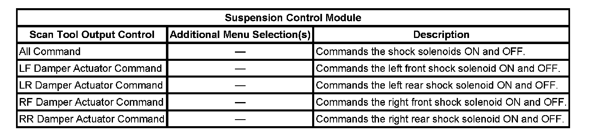

Scan Tool Output Controls
Scan Tool Output Controls
A scan tool may be used in order to command the shock absorbers ON or OFF to aid if a certain portion of a circuit or a component is in working order. The table below lists the tests that are available for the electronic suspension control (ESC) system.
Using a scan tool, select the ESC Special Functions from the menu. The status of the output being cycled will be shown on the screen. The shock absorbers can be cycled to turn ON or OFF.
Using the LF shock absorber as an example, commanding the shock absorber ON can indicate whether the ESC system is able to correctly operate the LF shock absorber. This can determine if a DTC that pertains to that shock absorber is able to reset, and if the ESC module's internal circuitry is able to operate the LF shock absorber. For example, suppose the ESC system sets an intermittent DTC C0577, which is LF Shock Absorber Solenoid Short to Ground. In order to diagnose this condition using a scan tool, select the ESC special Functions. Then, cycle the LF shock absorber solenoid while moving the suspected wiring/connector. Attempt to duplicate the malfunction conditions. This scan tool feature allows checks that could not be performed while driving the vehicle. This example can be applied to the other shock absorbers.
